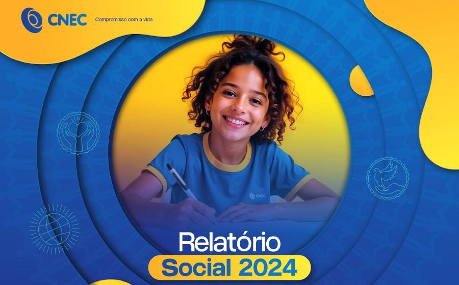

Spots
de rádio
locução profissional
Conteúdo com propósito.
Presença que conecta.
locução profissional
conteúdo que fortalece marcas
ideias que viram resultados

conteúdo institucional
Marketing que conecta.
Estratégia que transforma.♡